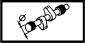

INTAKE SHAFT
- Path
- Technical Data > Manufacturing data > 10 ENGINE > 1036 TIMING SYSTEM > INTAKE SHAFT
- Kind
- technical data / specifications
- Applies to
- all engines; all production periods
- Interactive page
- https://sloeber94.github.io/elrnDB-lYpsln/en/#/2427761
Applies to: all engines; all production periods
Inlet shaft cam height (mm) | Validity | |||
|---|---|---|---|---|
7.5 | 1.2 16v | |||
Inlet shaft cam height (mm) | Validity | |||
8.0 | 1.4 16v | |||
Applies to: all engines; all production periods
Cam lift (mm) | Validity |  | ||
|---|---|---|---|---|
7.5 | 1.2 16v | |||
Cam lift (mm) | Validity | |||
8 | 1.4 16v | |||
Journal diameter (mm) | Validity |  | ||
ø 1 | ø 2 | ø 3 | ||
35.000 ÷ 35.015 | 48.000 ÷ 48.015 | 49.000 ÷ 49.015 | 1.2 16v 1.4 16v | |